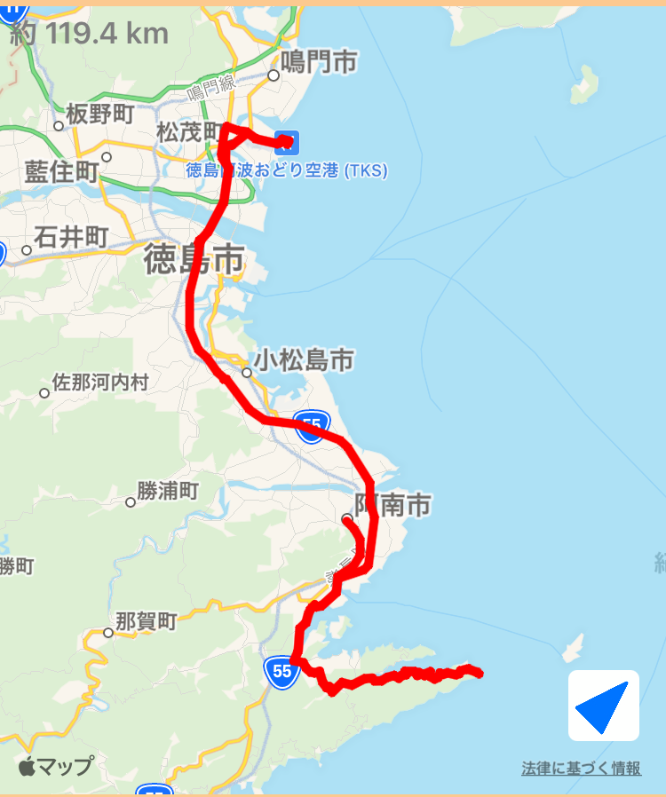

~107日目~
10/16 松山⇨佐田岬⇨宇和島
~108日目~
10/17 宇和島⇨愛南
~109日目~
10/18 愛南⇨足摺岬⇨四万十
~110日目~
10/19 四万十⇨須崎
~111日目~
10/20 須崎⇨仁淀⇨UFOライン⇨仁淀
~112日目~
10/21 仁淀⇨桂浜⇨高知空港⇨高知
~113日目~
10/22 高知市内
~114日目~
10/23 高知⇨室戸岬⇨阿南

~115日目~
10/24 阿南⇨蒲生田岬⇨徳島空港⇨徳島
~116日目~
10/25 徳島⇨鳴門⇨竹居観音岬⇨高松
~117日目~
10/26 高松⇨銭形砂絵⇨西条
~118日目~
10/27 西条⇨しまなみ街道⇨倉敷
~119日目~
10/28 倉敷⇨姫路
~120日目~
10/29 姫路⇨甲子園⇨神戸
~121日目~
10/30 神戸市内
~122日目~
10/31 神戸⇨淡路島⇨神戸